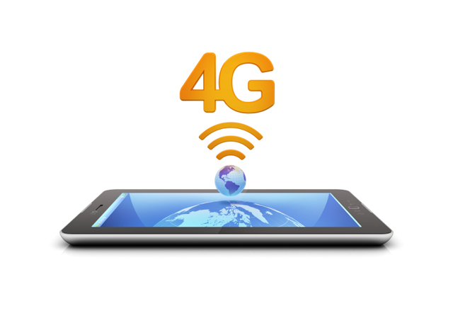

Question 1. What is 4G Wireless Technology?
Question 2. When is the 4G Technology going to be launched?
Question 3. So is it only the Japanese Companies that are working toward 4G?
Question 4. What would be the main features of 4G Technology?
Question 5. What are the likely new features?
Question 6. I have heard some people referring to WiMax as 4G wireless technology, is that true?
At present 2G Technology (GSM) is widely used worldwide. The problem with 2G technology is that the data rates are limited. This makes it ineffecient for Data Transfer applications like video conferencing, music or video downloads, etc. To increase the speed various new technologies have come into picture. The first is 2.5G (GPRS) technology that allows data transfer at a better rate than GSM and recently 3G (WCDMA/UMTS) technology has come into picture. The maximum theoretical data transfer with this 3G technology is 2Mbps (practically it could be a max of 384Kbps or even less). The 4G technology which is at its infancy is suppose to allow data transfer upto 100Mbps outdoor and 1Gbps indoor.
NTT Docomo is planning to launch 4G sevices in Japan around 2010-2015. Earlier it announced that it would be launching the service in 2006-2008. But at the same time it has said that the data transfer would be maximum of 20Mbps. Recently they have started calling this intermediate launch as 'Super-3G'.
Not really. NTT-DoCoMo is jointly developing 4G with HP. A the same time Korean companies like Samsung and LG are also looking into 4G. In Europe companies like Siemens are also working on this. Recently Japan, China and South Korea has started working together on the technology and they plan to standardise it together. See News section for more detail.
The 4G technology will be able to support Interactive services like Video Conferencing (with more than 2 sites simultaneously), Wireless Internet,etc. The bandwidth would be much wider (100 MHz) and data would be transferred at much higher rates. The cost of the data transfer would be comparatively very less and global mobility would be possible. The networks will be all IP networks based on IPv6. The antennas will be much smarter and improved access technologies like OFDM and MC-CDMA (Multi Carrier CDMA) will be used. Also the security features will be much better.
The entire network would be packet switched (IP based). All switches would be digital. Higher bandwidths would be available which would make cheap data transfer possible. The network security would be much tighter. Also QoS will imrpove. More effecient algorithms at the Physical layer will reduce the Inter-channel Interference and Co-channel Interference.
The WiMax lobby and the people who are working with the WiMax technology are trying to push WiMax as the 4G wireless technology. At present there is no consensus among people to refer to this as the 4G wireless technology. I do not think this is popular with the researching community. WiMax can deliver upto 70 Mbps over a 50Km radius. As mentioned above, with 4G wireless technology people would like to acheive upto 1Gbps (indoors). WiMax does not satisfy the criteria completely. Also WiMax technology (802.16d) does not support mobility very well. To overcome the mobility problem, 802.16e or Mobile WiMax is being standardised. The important thing to remember here is that all the researches for 4G technology is based around OFDM. WiMax is also based on OFDM. This gives more credibility to the WiMax lobby who would like to term WiMax as a 4G technology. Since there is no consensus for the time being, we have to wait and see who would be the winner.
The end